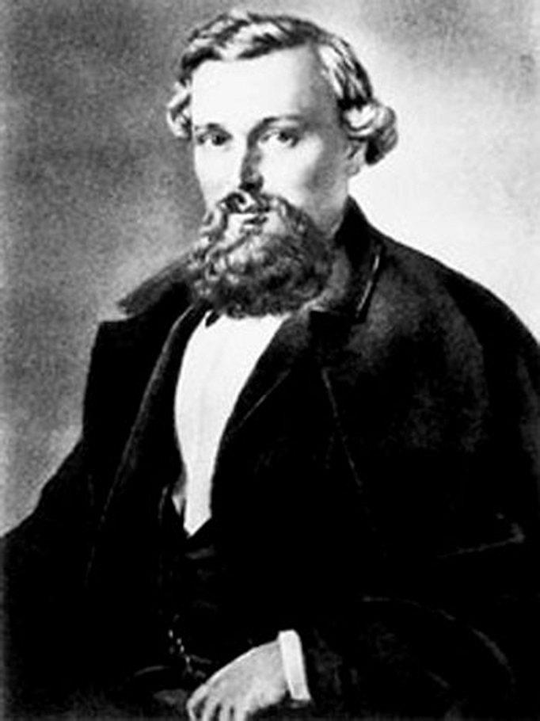

Дмитрий Иванович Иловайский
23 февраля 1832 - 15 февраля 1920
Аудитория 211
Открыта 14 ноября 2018 года
23 февраля 1832 - 15 февраля 1920
Открыта 14 ноября 2018 года
Дмитрий Иванович Иловайский (1832 – 1920) – историк, публицист, педагог и автор весьма популярных во второй половине XIX – начале XX века учебных пособий по русской и всеобщей истории, создатель пятитомной «Истории России», редактор и издатель православно-патриотической газеты «Кремль».
Родился Дмитрий Иванович в 1832 г. в небольшом уездном городке Рязанской губернии Раненбурге (ныне город Чаплыгин Липецкой области) в семье мещанина.
Окончив трехклассное уездное училище, летом 1843 года он был зачислен в 1-ую мужскую Рязанскую гимназию. «Начиная с IV класса гимназии, я уже содержал себя частными уроками, почувствовал склонность к занятиям историей и к преподавательской деятельности», – вспоминал впоследствии Дмитрий Иванович
После окончания гимназии (1850 г.) юноша поступил на историкофилологический факультет Московского университета. Окончив университет в 1854 г., Дмитрий, как казеннокоштный студент должен был шесть лет отрабатывать свое образование по назначению учебного округа.
Не имея протекций, он вернулся в родную Рязанскую гимназию старшим учителем истории, где на протяжении четырех лет успешно совмещал педагогическую деятельность с наукой.
Летом 1858 г его заметили в Московском учебном округе и перевели в 3-ю московскую гимназию. В том же году он защитил магистерскую диссертацию по теме «История Рязанского княжества», за которую был удостоен малой Уваровской премии Академии наук. Его труд был с интересом встречен в среде ученых как одна из первых попыток комплексного изучения местной истории. Рязанская историография обязана Иловайскому важными публикациями по истории культуры: об открытии в Рязани публичной библиотеки, истории Рязанской мужской гимназии. Он ввел в высокую науку имена рязанских историков Т. Воздвиженского, А. Пискарева, археолога Д. Тихомирова, определил факт существования погибших рязанских летописей.
Иловайский - родоначальник региональной историографии и автор первого очерка о рязанской старине. Задача, которую Дмитрий Иванович ставил в первом своем труде - изучать духовную жизнь народа, его предания, песни, поверья, легенды, - актуальна и для современных историков.
Переехав в Москву, Иловайский не прерывал связи с Рязанщиной, посылал свои книги, которые бережно сохранила научная библиотека Рязанского краеведческого музея-заповедника. Историк делал главный доклад на праздновании 800- летия Рязани, был почетным членом Рязанской ученой архивной комиссии.